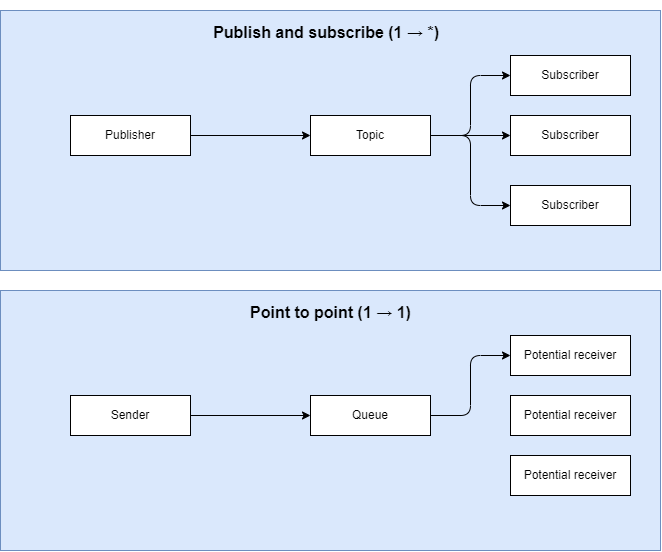

Most widely deployed open source message broker.
Created by Nils Bauroth and Kai Glassmacher
Agenda
- Message Broker Recap
- What is RabbitMQ?
- RabbitMQ vs. Kafka
- Code examples
What is message broker?
- Software that enables applications, systems, and services to communicate with each other and exchange information
- Interdependent services are able to "talk" with one another - even different languages
- The message broker is therefore a middleman
- Message brokers offer two basic message distribution patterns
Distribution patterns
- Point to point (1 → Many) also: message queue messaging
- Publish and subscribe (1 → 1) messaging
Distribution patterns

What is RabbitMQ?
- Open source message broker written in Erlang
- Messaging broker receive message from publisher and route them to consumers
- Core messaging protocol is AMQP
- Since AMQP is a network protocol, communication throughout different machines possible
Features of RabbitMQ
- Reliability
→ Persistence, Delivery acknowledgements, Publisher confirms and high availability - Clustering
→ Several RabbitMQ servers can be clustered together - Highly available Queues
→ Available even if hardware fails - Multi-protocol & many clients
→ Supports many messaging protocols and a large amount of programming languages
Message flow in RabbitMQ

Types of Exchanges

RabbitMQ vs. Kafka
| RabbitMQ | Kafka | |
|---|---|---|
| Message/sec | ~ 4.000 - 10.000 | ~ 1.000.000 |
| Message retention | Acknowledge based | Policy-based |
| Payload size | No constraints (No max size) | Default 1MB limit |
| Use cases | Simple use cases | Massive data throughput |
simplified Producer
simplified Consumer
Thank you!
If you have questions, feel free to ask now.
When you have questions during the exercises, do not hesistate to ask us.
We are now continuing with the quiz